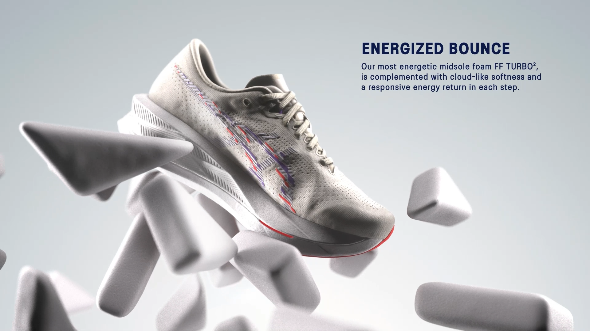
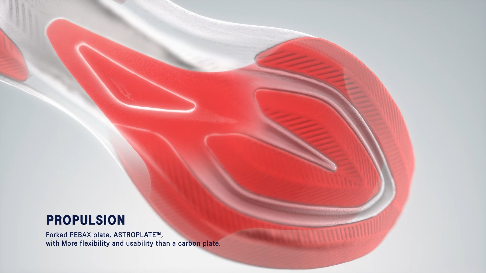
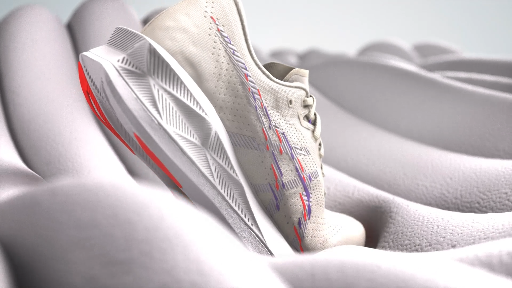
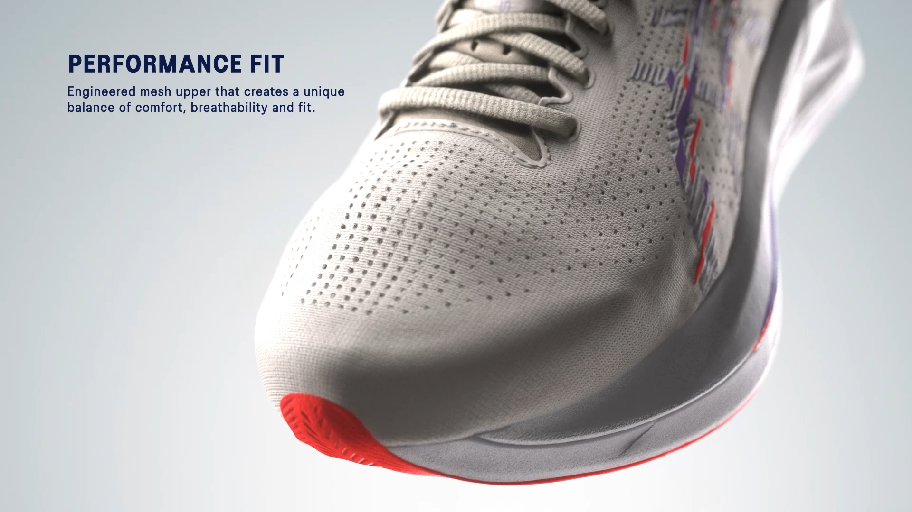
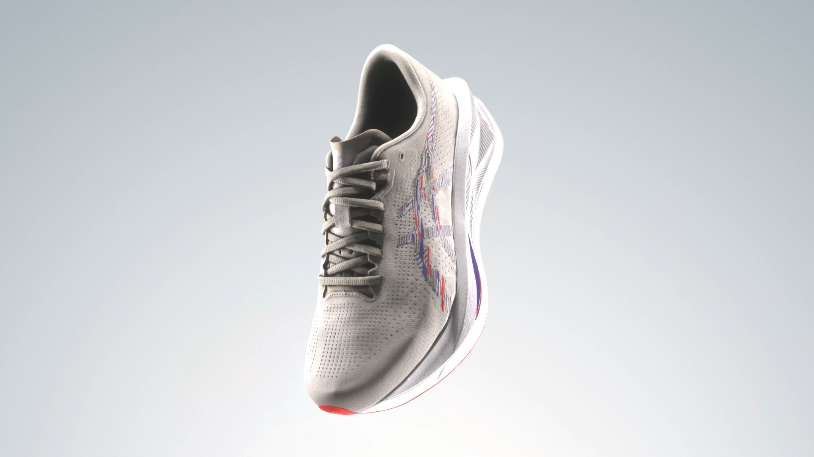

Technical Visualization / Product Storytelling
ASICS SONICBLAST™ B2B Technical Video
A B2B technical visualization project for ASICS SONICBLAST™, translating footwear technology and product structure into a clear, premium, and efficient communication film.
Project Film
Project Impact
I independently led this B2B technical presentation project. Under ASICS' rigorous visual standards, SONICBLAST technology parameters were translated into refined and efficient visual communication assets for brand, supply chain, and sales communication. The project effectively reduced the cost of cross-department technical communication.
Challenge & Execution
End-to-end independent production
I independently handled the full project workflow, from technical indicator breakdown and storyboard planning to visual style development and 3D motion execution, ensuring every stage aligned with the commercial visual standards of the product brand.
Technical specification visualization
For the communication challenges of B2B content, footwear technology was translated into an easily understandable visual language, maintaining a premium visual impact while ensuring accurate information delivery.
Motion rhythm and narrative optimization
I precisely calibrated camera movement, editing rhythm, and sound design to ensure the film had strong viewing guidance and improved the audience's understanding of the technical points.
Visual Breakdown
A curated sequence of simulation, material close-ups, particle transformation, and final product visuals, showing how the recyclable technology concept was translated into a cinematic brand film.








NXEL Brand Visual Identity
Brand Visual / 3D Product System
→